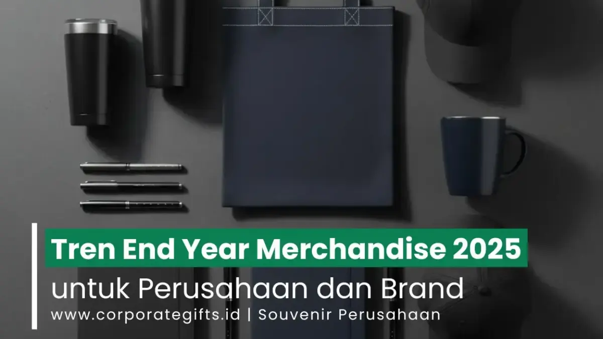

Corporate Gifts ID - End Year Merchandise 2026 adalah produk apresiasi yang diberikan perusahaan kepada karyawan, klien, dan mitra bisnis menjelang akhir tahun. Pilihan terbaik tahun ini mengutamakan material berkelanjutan, personalisasi nama atau logo, dan fungsi harian yang nyata agar brand tetap diingat sepanjang tahun.
Perusahaan yang memilih merchandise sesuai nilai brand dan kebutuhan penerima lebih mudah membangun loyalitas karyawan sekaligus mempererat hubungan dengan klien dan mitra bisnis. Akhir tahun selalu menjadi momentum emas untuk menegaskan komitmen, kepedulian, dan identitas perusahaan lewat cenderamata yang tepat guna.
Poin Kunci End Year Merchandise 2026:
- Fokus Nilai Guna: End Year Merchandise 2026 berfokus pada keberlanjutan, personalisasi, dan nilai guna nyata, bukan sekadar tampilan.
- Standar Baru Ramah Lingkungan: Merchandise ramah lingkungan menjadi standar baru (ESG), bukan lagi nilai tambah opsional bagi perusahaan modern.
- Apparel & Aksesori Favorit: Apparel premium dan aksesori kerja tetap menjadi pilihan favorit karena daya pakai jangka panjang.
- Dukungan Kesejahteraan: Wellness merchandise merefleksikan kepedulian perusahaan terhadap keseimbangan kerja karyawan pasca era hybrid.
- Kedekatan Emosional: Personalisasi berbasis identitas brand meningkatkan keterikatan emosional penerima terhadap perusahaan.
Apa Itu End Year Merchandise dan Mengapa Relevan di 2026?
End Year Merchandise adalah produk apresiasi yang diberikan perusahaan menjelang tutup tahun untuk memperkuat hubungan dengan karyawan, klien, dan mitra bisnis. Di tahun 2026, fungsinya berkembang menjadi alat strategi employer branding dan diplomasi bisnis, bukan sekadar hadiah seremonial tahunan.
Perusahaan modern menempatkan merchandise sebagai investasi jangka panjang terhadap citra brand. Setiap produk yang dipilih membawa pesan tentang nilai, kepedulian, dan profesionalisme perusahaan kepada penerimanya. Anda bisa mulai menyusun strategi ini lebih awal dengan melihat referensi kategori produk terbaru di katalog Corporate Gifts.
Apa Saja Tren Utama End Year Merchandise 2026?
Tiga pergeseran besar mendominasi arah merchandise akhir tahun ini. Ketiganya saling melengkapi dan menjadi acuan utama sebelum perusahaan menentukan pilihan produk:
- Keberlanjutan - material daur ulang dan tahan lama menjadi prioritas utama.
- Personalisasi - sentuhan identitas brand dan nama penerima meningkatkan nilai emosional.
- Fungsi produktivitas - produk yang benar-benar dipakai sehari-hari lebih dihargai dibanding hadiah dekoratif pajangan.
Mengapa Merchandise Ramah Lingkungan Menjadi Standar Baru?
Merchandise ramah lingkungan kini menjadi ekspektasi dasar karyawan dan klien terhadap perusahaan modern. Pilihan material daur ulang menunjukkan komitmen nyata terhadap tanggung jawab sosial dan tata kelola berkelanjutan (environmental, social, and governance):
- Tote bag daur ulang dari kanvas atau katun organik, cocok untuk seminar, pameran, atau acara pisah sambut karyawan.
- Insulated drinkware yang tahan panas dan dingin, mendukung gaya kerja karyawan yang aktif dan sering bepergian.
- Plantable items seperti alat tulis atau kartu ucapan bertema pertumbuhan, membawa pesan harapan baru di akhir tahun.
- Notebook daur ulang yang bisa dipersonalisasi dengan nama atau kutipan motivasi untuk menambah nilai emosional.

Koleksi premium apparel dan aksesori kerja fungsional sebagai cenderamata tutup tahun korporat.
Apa Manfaat Premium Apparel sebagai End Year Merchandise?
Apparel premium memberi nilai guna jangka panjang sekaligus memperkuat identitas visual brand setiap kali dikenakan. Jenis merchandise ini tetap menjadi favorit meski tren produk digital terus berkembang:
- Hoodie dan sweatshirt premium dengan bordir logo kecil di dada atau lengan untuk kesan eksklusif tanpa berlebihan.
- Outerwear branded seperti jaket tahan air, cocok untuk kegiatan outdoor atau pelatihan tim tahunan.
- Topi dan beanie dengan bordir logo lembut, pilihan hemat biaya namun tetap terlihat premium dan kasual.
- Produk kulit asli atau sintetis bermutu tinggi seperti dompet kartu atau notebook holder untuk klien penting, melambangkan penghargaan tinggi perusahaan.
Bagaimana Wellness Merchandise Mendukung Produktivitas Karyawan?
Wellness merchandise menunjukkan kepedulian tulus perusahaan terhadap keseimbangan kerja dan kehidupan pribadi karyawan. Kategori ini makin relevan bagi perusahaan dengan model kerja hybrid maupun fleksibel:
- Tech gifts ergonomis seperti wireless charger pad, smart tracker, atau lampu kerja ramah mata untuk mendukung kenyamanan harian.
- Mindfulness kit berisi humidifier aromaterapi kantor dan jurnal refleksi untuk membantu karyawan mengelola stres kerja.
- Desk organizer set yang membantu karyawan merapikan area kerja sekaligus menambah kenyamanan visual meja kerja.
- Cozy home items seperti selimut lembut atau bantal sandaran leher ergonomis, dihargai terutama menjelang musim liburan akhir tahun.
Bagaimana Merchandise Mendukung Mobilitas dan Gaya Kerja Aktif?
Merchandise pendukung mobilitas menjawab kebutuhan karyawan modern yang aktif berpindah tempat kerja atau sering bepergian tugas luar kota. Kategori ini menggabungkan fungsi praktis dengan tampilan profesional:
- Tas kerja anti air dengan kompartemen laptop berbusa tebal, favorit pekerja modern yang dinamis.
- Kursi lipat ringan dan matras portabel untuk kenyamanan ekstra saat kegiatan tim atau outing di luar kantor.
- Speaker bluetooth custom dengan logo brand elegan, cocok sebagai media promosi fungsional jangka panjang.
- Tech tracker custom yang membantu karyawan melacak barang penting dengan mudah dan aman.
Perbandingan Kategori End Year Merchandise 2026
Tabel berikut merangkum nilai utama, contoh produk, dan sasaran penerima dari setiap kategori sebagai bahan pertimbangan pengadaan Anda:
| Kategori Merchandise | Nilai Utama | Contoh Produk | Sasaran Penerima |
|---|---|---|---|
| Ramah Lingkungan (Eco) | Tanggung jawab sosial & ESG | Tote bag kanvas, notebook daur ulang, plantable card | Karyawan umum, peserta pameran, event massal |
| Premium Apparel | Identitas visual brand & prestise | Hoodie bordir, jaket waterproof, leather card holder | Karyawan berprestasi, klien mitra bisnis |
| Wellness & Health | Kepedulian keseimbangan kerja | Humidifier aromaterapi, tech gifts ergonomis | Pekerja remote/hybrid, tim operasional kantor |
| Mobilitas Kerja Modern | Fungsi praktis harian | Tas laptop tahan air, speaker portabel Bluetooth | Eksekutif, tim sales lapangan, rekanan VIP |
Bagaimana Cara Memilih End Year Merchandise yang Tepat?
Pemilihan yang terencana membuat anggaran lebih efisien dan hasilnya lebih berkesan. Berikut langkah praktis yang bisa diikuti tim HR, pengadaan, maupun marketing:
- Tentukan penerima dan tujuan: Bedakan kebutuhan hadiah untuk seluruh karyawan, manajer internal, klien VIP, dan mitra strategis.
- Tetapkan alokasi anggaran: Susun anggaran bertingkat per kelompok penerima agar pembagian nilai cenderamata tetap proporsional.
- Pilih kategori produk selaras nilai: Pilih barang yang sejalan dengan visi perusahaan, misalnya keberlanjutan atau kepedulian lingkungan.
- Tentukan teknik personalisasi: Terapkan logo perusahaan secara elegan melalui grafir laser, bordir, atau emboss nama penerima.
- Jadwalkan timeline pemesanan: Pastikan waktu produksi dan pengiriman mencukupi, idealnya pesan 1-2 bulan sebelum musim puncak akhir tahun.
- Minta sampel proofing: Mintalah dummy produk fisik atau mockup visual sebelum produksi massal untuk memastikan kesempurnaan mutu.
Bagaimana End Year Merchandise Memperkuat Identitas Brand?
Pemilihan kategori merchandise yang konsisten dengan nilai perusahaan membangun narasi brand yang kuat dalam jangka panjang. Setiap produk menjadi representasi nyata dari visi, apresiasi, dan perhatian perusahaan terhadap seluruh mitra bisnis dan pekerjanya.
Perusahaan yang memadukan keberlanjutan, personalisasi rapi, dan fungsi praktis dalam satu strategi cenderamata akhir tahun menciptakan pengalaman unboxing yang sarat makna. Momen tutup tahun menjadi kesempatan paling strategis untuk menegaskan citra perusahaan sebagai entitas bisnis yang modern, peduli, dan profesional.
Kesimpulan & Rekomendasi Pemesanan
End Year Merchandise 2026 bukan sekadar hadiah seremonial akhir tahun, melainkan instrumen investasi strategis untuk mempererat loyalitas dan kemitraan bisnis. Kombinasi material ramah lingkungan, personalisasi yang bersahaja, dan nilai fungsi tinggi menjadi kunci utama cenderamata yang abadi di hati penerimanya.
Jelajahi pilihan lengkap paket Merchandise Perusahaan dan Ide End Year Merchandise Custom di katalog resmi CorporateGifts.ID untuk menemukan produk yang paling selaras dengan identitas brand Anda.

![[Update 2026] Ide End Year Merchandise Custom Berkesan - CorporateGifts.ID](../assets/img/blog/ide-end-year-merchandise-unik-berkesan-1.webp)